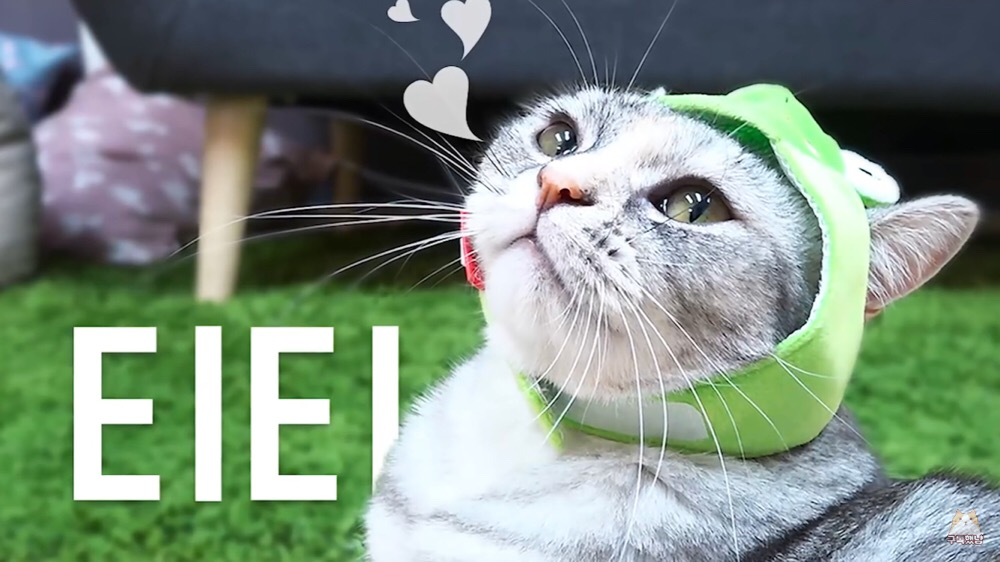

|  | |
| 이름 | 티티 |
|---|---|
| 출생 | 2016년 1월 추정 |
| 품종 | 브리티쉬 숏헤어 믹스 / 실버 코트 |
| 눈 색 | 올리브 |
| 성별 | 여아 |
| 몸무게 | 4.90kg (20.08.07) |
| 꼬리 길이 | 28cm |
| 별명 | 딸래미, 여왕님, 철벽냥이, 모두까기 인형등 |
회색이 대다수를 차지하고 갈색이 살짝 섞인 코트의 고양이다. 브리티쉬 숏헤어로, 디디와 함께 본 방송의 초대 멤버 중 하나. 디디와 마찬가지로 믹스 추정. 전형적인 브숏은 머리가 둥글고 전반적으로 통통하다는 느낌을 준다. 놀숲인 디디가 랙돌을 더 닮았단 얘기가 많듯 티티 또한 외형은 아메리칸 숏헤어와 더 닮았다는 얘기도 있다. 채터링으로 까치 소리를 내는 특기가 있다. 말풍선 색은 회색. 팬들은 생새우색이라고 부르곤 한다. 집사도 채팅창을 봤는지 새우를 가지고 요리할 때 티티 색이라고 언급하거나 아예 방송 시작부터 블랙타이거 고양이라고 부르기도 했다. 집사의 평에 따르면 루루는 초코, 라라와 코코는 밀크, 츄츄는 카라멜 마끼아또, 모모는 카푸치노, 디디는 덜 섞인 카푸치노, 그리고 티티 혼자 생새우다.흑임자라떼가능 집사는 언젠가 시중에 판매하는 모든 종류의 새우를 늘어놓고 어떤 새우가 티티와 가장 비슷한지 찾아보는 크림연구소를 기획하고 싶다고 말할 정도. 종종 딸래미라고 불리기도 한다. 17년 이후부터 거의 4kg 후반대를 유지하고 있다. 18년 6월 10일 기준으로 4.71kg으로 몸무게 차이가 크지 않다.
집사가 나이를 정확하게 모르는 고양이 중 한 마리로, 집사는 티티가 디디보다 나이가 더 많을 것으로 추정하고 있다. 정작 디디를 분양했을 때 고양이들을 팔던 사람은 티티와 디디가 같은 날 태어났다고 소개했다. 집사는 이것을 거짓말이라고 생각하고, 디디의 생일은 맞을지도 모르겠지만 티티는 확실하게 아닐거라고 추측하고 있다. 처음 만날 당시에는 티티가 디디보다 컸고, 번식 공장으로 돌려 보낸다는 말을 티티만 보면서 했기 때문이다. 집사가 처음에는 디디만 데려갔으나 판매자가 티티가 분양되지 않을 경우 다시 번식 공장으로 돌려 보내겠다는 말에 암컷인 티티가 공장으로 돌아가게 되면 좋지 않을 거라는 생각이 들어 회사에 양해를 구하고 티티도 함께 데려갔다.
1월 27일 서열 영상에서 '의외로' 티티의 서열을 중간인 4위 정도로 소개하고 있는데, 17년 말부터 공격성이 줄어들어서 그런 모양.[24] 성격 자체가 꽤 둥글어진 것인지 이유 없이 냥냥펀치를 날리는 빈도가 확 줄었다. 이러한 정황상 댓글에서는 '티티는 사실상 번외 서열 아니냐'는 의견이 많이 나왔다. 후에 18년 6월 11일 깜짝 라이브에서 집사가 티티의 서열은 2위라고 정정했다.
워낙 열악한 환경에서 태어났다보니 어렸을 때부터 병원을 자주 다녔고, 면역력이 너무 안 좋아서 허피스를 심하게 앓아서 하마터면 오른쪽 눈의 시력을 잃어버릴 뻔했다고 한다. 가끔 어두운 곳에서 티티를 보여줄 때 오른쪽 동공의 색깔이 탁한 이유가 이 때문이다.[25] 덕분에 이동장과 병원을 매우 싫어한다고 한다. 건강검진을 위해 티티가 이동장으로 인한 스트레스를 조금이라도 줄이기 위해 집사의 고민이 이만저만이 아니다.
그리고 울음소리는 전형적인 '야옹' 하는 고양이 소리인데 목소리가 대단히 예쁘다는 평가가 많은 편. 2017년 후반까지 오프닝에 쓰이던 고양이 울음소리가 티티 울음소리이다.
손을 다른 고양이를 때리는 데에 쓰다 보니 정작 야바위를 할 때는 손을 쓰지 않고 머리로만 밀고 가는 모습을 자주 보여서 머리'만' 쓰는 고양이라는 별명이 붙었다.
크림히어로즈 10마리의 고양이 중 단연 집사 바라기이다. 일상 생활영상을 보면 다른 고양이들은 자거나 놀고 있더라도 거의 집사 곁에 붙어있다. 집사가 외출하면 하루종일 집사만을 기다리고, 집사가 현관 밖으로 나가면 재빨리 캣타워 위에 올라가서 창문 밖으로 집사가 가는 모습을 바라본다.사랑꾼 큰딸래미과묵하고 도도하다. 그런데 크집사의 다른 고양이들이 독특해서 그렇지 사실 이게 제일 전형적인 고양이의 모습에 가까운 성격이다. 그리고 우울한 표정(일명 '힝구')ㅍㅅㅍ을 짓고 있는 모습이 자주 보여 궁금해 하는 시청자들이 많은데 그냥 브리티시 숏헤어 품종 자체의 특징이라고 한다. 한편으로는 얌전한 면모도 있어, 집사가 부르면 테이블 위까지 올라올 만큼 말을 잘 듣는다. 후각이 좋아서 집사가 부엌에서 저녁을 만들 때 종종 테이블에 올라오는 고양이들(티티, 코코, 모모, 라라) 가운데서도 유일하게 집사 말을 듣고 안전선 밖에서 기다릴 줄 알기도 한다. 또한 10마리를 모아 놓고 츄르를 먹일 때면 자기에게 차례가 올 때까지 얌전하게 기다리는 모습을 보여준다.다만 냥아치들 듀오에게 뺏겨 차례가 잘 오지는 않는다 가끔씩 패션쇼를 할 때, 다른 모든 고양이들이 거부하는 모자를 간식만 있다면 기꺼이 써서 포즈를 잡아 줘서 자본주의에 최적화된 (패션) 야옹이라는 말도 듣는다.
냥냥펀치를 자주 날리다 보니 새로 바뀐 고양이 설명란에 약간 '폭력적'이라는 문구가 붙고 말았다. 곁에서 알짱거리면 누구든지 상관없이 솜방망이를 날리기 때문에 크림히어로즈에서 모든 고양이들은 티티에게 맞는 모습이 카메라에 잡힌 적이 있다. 아예 2017 크림 어워드 재난 부문 후보 소개 영상에서 대놓고 티티가 '모든 고양이들을 패고 다녔어요.'라고 설명했다. 그 중에서도 최대 피해자(?)는 단연 동갑내기 친구 디디. 티티가 나이를 먹으면서 과거에 비해 얌전해진 덕분에 다른 고양이를 때리는 횟수가 눈에 띄게 줄어들었음에도 불구하고 친구 디디에게는 여전히 한번씩 냥냥펀치를 날리는 모습이 잡히고 있다. 그냥 옆에 있다가 이유없이 괜히 한대씩 맞기도(...). 하지만 대부분은 디디가 한심해보이거나 집사의 말에 따르지 않을 때 냥냥펀치를 날린다. 집사의 말에 의하면 디디와 종종 싸운다고 하는데 티티가 이길 때도 있고 디디가 이길 때도 있다고. 디디는 덩치가 크고, 티티는 다리가 고양이들 중에서 유독 길기 때문에 승률이 비슷비슷하다. 다만 워낙에 디디가 싸움을 싫어하고 온순한 성격이다 보니 티티가 때려도 그냥 맞기만 하거나 피하는 경우가 많아서 자주 싸우지는 않는다. 실제로 집사의 전 회사에서 살던 아깽이 시절부터 디디를 깨물거나 덮치곤 한 듯.이 둘은 그냥 노부부다
또한, 목욕을 엄청나게 싫어해서 1년 넘게 키우면서 발 한 번 욕조에 담그는 것조차 할 수가 없었다고 한다. 크림히어로즈 고양이들 중 유일하게 목욕 영상이 없었다. 2017년 10월 15일, 1년 만에 목욕을 했다.# 평소 다른 고양이들 목욕과 달리 싱크대가 아닌 욕실에서 진행했다. 목욕 내내 큰 소리로 야옹거리며 버둥거렸고 티티의 소리를 들은 고양이들이 욕실 앞에 옹기종기 모여들었다. 집사의 말로는 6박 7일 삐져 있을 예정이라고 한다. 이전에는 목욕을 위해 물 적응 훈련으로 발목까지만 물을 담그는 영상만 존재했다. 티티가 적응 훈련을 1분 정도 견딜 수 있게 되면 목욕을 시킬 것이라 하였으나 아직 갈 길이 먼 듯. 집사가 손을 무기로 쓰며 물을 싫어한다고 붙여준 별명이 울버린.[26]
집사가 다정한 고양이라고 언급하기도 하고 까칠한 고양이라고 언급하기도 하더니 츤데레 고양이라고 인증을 해버렸다. 어릴 때에 자주 아파 약을 많이 먹여서 까칠해진 것 같다고 하며 요새는 가장 건강한 고양이인 것 같아서 다행이라는 말도 덧붙였다.[27] 그리고 집사가 칭찬해주는 것을 알아듣는 모습도 보이는데, 집사의 예쁘다는 말을 듣고는 집사에게 다가와 뽀뽀를 하는 모습을 보였다. 급기야 뽀뽀 안 해줬다고 삐지기도 했다.움~ 아!
자기보다 한참 어린 츄츄, 루루, 라라를 제외한 다른 고양이들이 집사의 케어를 받으면 질투해서 삐지기도 하는 듯...했지만 17년도 후반부에 들어 츄츄가 어느 정도 크기도 했고 집사 옆에 딱 붙어다니려고 해서 그런지 요새는 츄츄를 질투해서 집사가 보지 않을 때마다 냥냥펀치를 날리곤 한다. 편집고양이한테 애교를 부려 몇 번 간식을 몰래 먹다가 집사에게 이 사실을 들키기도 했다.
좋아하는 장소로 원형 스크래쳐와 투명 해먹이 있는데 특별한 일이 없으면 거의 항상 그 자리에 앉아 있는다. 원형 스크래쳐는 티티가 어렸을 때부터 아주 좋아하는 장소라서 아예 이름이 티티 네스트일 정도. 하지만 얼마 전부터 티티 네스트를 버리고 투명 해먹으로 갈아탔는데 그 이유는 어떤 고양이가 네스트에 끙가를 했기 때문...그 이후로는 네스트에 들어가지 않는다고 한다. 17년도 후반에는 루루에게 투명 해먹을 뺏기는 일이 많아졌는데, 해먹을 뺏기면 시무룩해져서 한껏 우울한 표정ㅍㅅㅍ을 짓고 슬픔에 빠져 있는 것을 볼 수 있다. 투명 해먹에서는 창밖 구경을 좋아하는지, 잠자리와 새를 관찰한다고 한다.
동생들에게 냥냥펀치를 많이 날리긴 했지만 그루밍을 하며 돌봐 준 경험도 많아서 그런지, 인도네시아어 자막고양이와 아들이 방문한 영상에서 디디만큼은 아니었지만 아기를 별로 피하지 않고 오히려 먼저 다가가거나 손을 핥는 모습을 보였다.